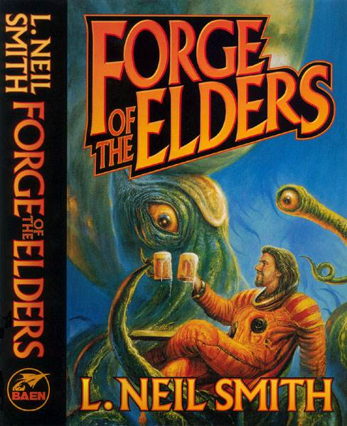

You are here: Webley Page > L. Neil Smith's Books > Forge of the Elders

Forge of the Elders
by L. Neil Smith
Original version.
Originally published in parts as:
Contact and Commune (Warner Books, 1990)
Converse and Conflict (Warner Books, 1990)
Concert and Cosmos (never published)BUY THIS BOOK from Amazon.com
BUY the Paperback from Amazon.com
Baen Books info page, with sample chapters: Forge of the Elders
Riverdale, NY: Baen Books, April, 2000
ISBN: 0-671-57859-6
First Printing: April 2000
You are here: Webley Page > L. Neil Smith's Books > Forge of the Elders